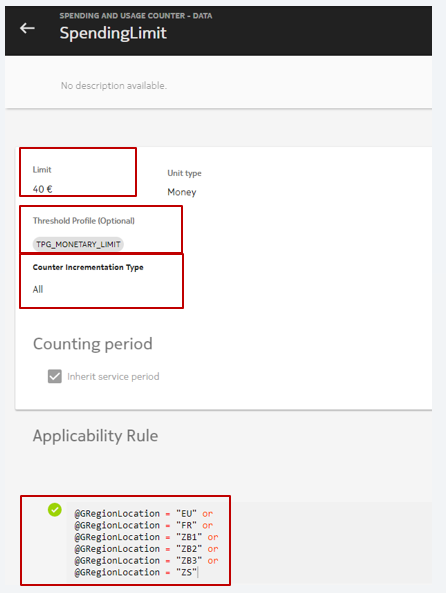
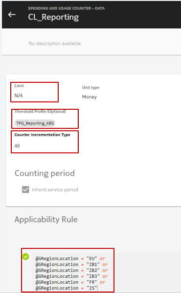
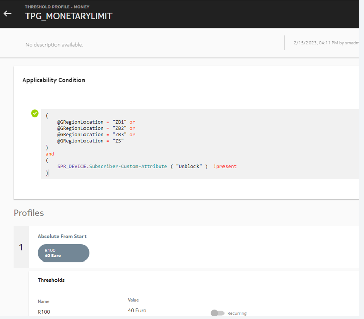
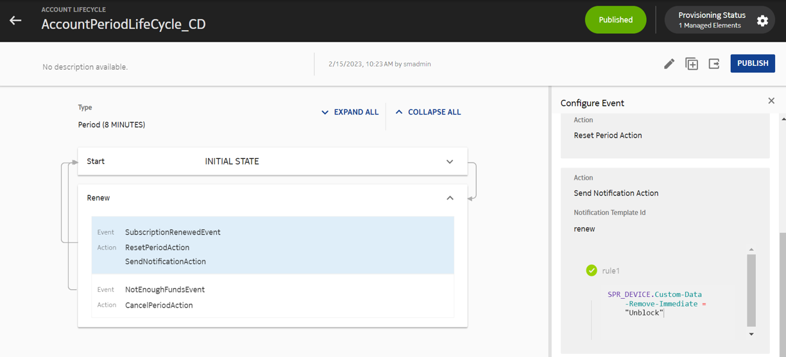
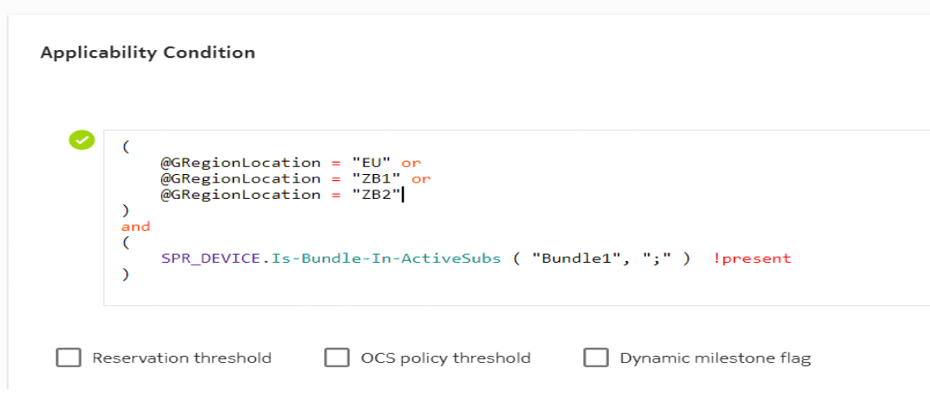
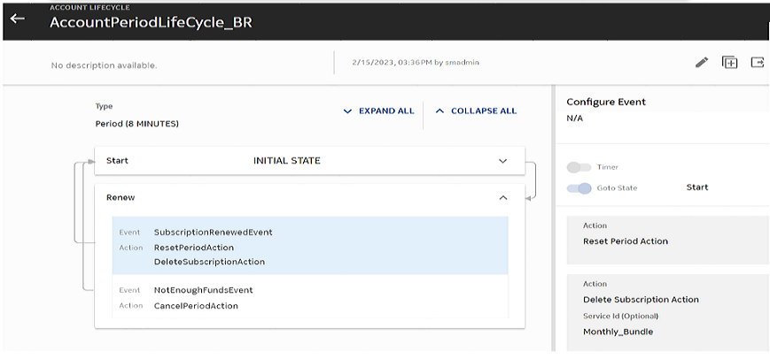
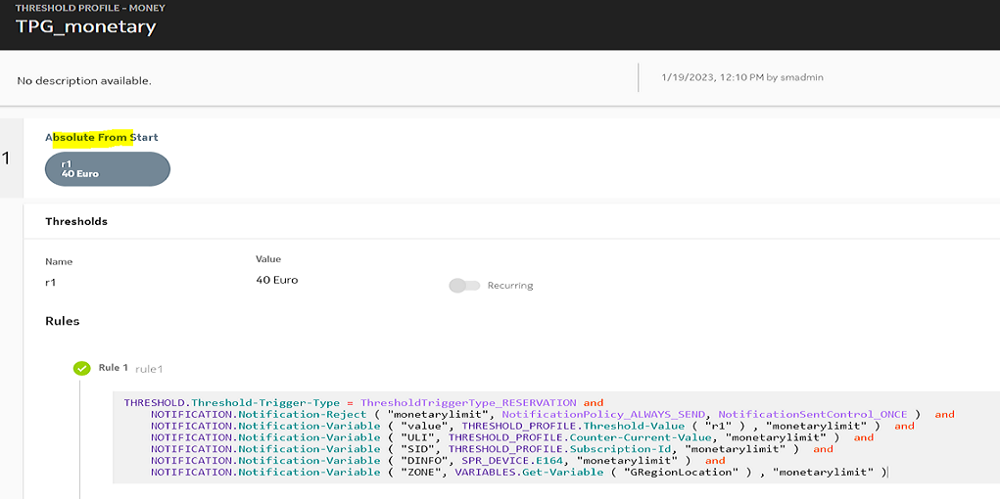

Notice:
Notice:Spending and usage counter entity is a combination of a Charging Logic and multi-service counter. When spending and usage counter entity is created, a Charging Logic and multi-service counter are aslo created. The name of the multi-service counter is generated by NCC using the following naming convention:
SpendingAndUsageCounter-Name, where Name is the name of the charging logic.
If a spending and usage counter is created with Charging Logic name XYZ, then a multi-service counter named SpendingAndUsageCounter-XYZ is created. However, if another counter with the same name exists, then the multi-service counter with the name SpendingAndUsageCounter-XYZ is not created. The created spending limit uses the existing counter.
 Note:
Note:Spending and usage counters can be attached to a service.
Note:Configuration
Log into new GUI, and navigate to Charging → ☰ → Charging Management →
Spending and usage counter. To define a new spending and usage
counter, click  and provide the details as described in the
following table.
and provide the details as described in the
following table.
| Parameters | Description | Options | Mandatory/Optional |
|---|---|---|---|
| APPLICABILITY
RULE: Limit service availability and applicability
with conditions. You can filter applicability with network, session,
subscriber and date and time criteria.Note: |
|||
| COUNTER RULE: Use
rules to define counter and conditional actions. You can filter
applicability with network, session, subscriber and date and time
criteria. Click +NEW to add a new counter rule. Note: |
|||
| COUNTER DETAILS | |||
| Name | This parameter indicates the name of the charging logic. | String | Mandatory |
| Description | This parameter indicates the description of the charging logic. | String | Optional |
| Category |
This parameter indicates the category associated with the charging logic. The default value is DefaultCategory. |
Select the required category from the predefined categories in the drop-down list. | Mandatory |
| Priority |
This parameter indicates the priority of the charging logic. Higher the number, lower is the priority of the charging logic. Multiple charging logics can have same priority. Note: |
Integer Valid range: 1 to 2147483647 |
Mandatory |
| Limit | This parameter specifies the spending and usage counter limit. | Integer | Mandatory |
| Unit type | This parameter specifies the unit type of the spending and usage
counter. It has the following values:
Note: |
Enum | Mandatory |
| Unit | This parameter specifies the spending and usage counter unit. It
is based on the Unit type. For example, Money (Unit type): Euro, Cent, Money (Units). Time: Hour, Second, Day, Minute. Data: Byte, KByte, MByte, GByte. Unit: Unit Note: |
Enum | Mandatory |
| Threshold profile | This parameter indicates the threshold profile already defined in the system that can be attached to spending limit. | Enum | Optional |
| Counter Incrementation Type |
This parameter indicates the consumption type. The supported values are as follows:
Note: |
Mandatory | |
| Counting period | |||
| Inherit service period | By default, this checkbox is checked. | Select this check box to indicate whether service period should be inherited. | Optional |
| Period type | Default: Custom | Enum | Mandatory |
| Periodical lifecycle | This parameter indicates the billing cycle associated with the counter. | Enum | Mandatory if Inherit service period is not selected. |
| Align Subscription Period End to a Date | By default, this checkbox is not checked. | Select this check box to indicate whether subscription period should be aligned to a date. | Optional |
| Reference Date | It supports Day of Month , and Day of Week values. | Enum | Mandatory if Align with Subscription period end to a date is selected. |
| Day of Month |
Following are the supported values for this parameter
|
Integer | Mandatory if Align with Subscription period end to a date is selected. |
| Day of Week |
Following are the supported values for this parameter
|
String | Mandatory if Align with Subscription period end to a date is selected. |
| Hour of Day |
Following are the supported values for this parameter
|
Integer | Mandatory if Align with Subscription period end to a date is selected. |
Versioning
To update a provisioned spending and usage counter, a new version should be created with the updated values. However, Unit type and Unit parameters cannot be updated.
To create a new version of spending and usage counter, Immediate Versioning must be enabled. That is, the SM application preference Entity Version Enabled should be enabled, and Bundle Version Type should be set to IMMEDIATE.
Note:Important points
- Set application preference Ignore CS priority for Notification-Reject to 1 (Enabled).
- Set Increase Counter for Bundle Fee to 1.
- Spending and usage counter (Reporting and Spending Limit Counter) should be created with Counter Incrementation Type set to All.
Note:Note the following important points about the important points about spending and usage counter:
- When spending limit has reached due to any of the following conditions, then the
call is rejected:
- BOU activation fee deduction of BOU bundles.
- Step-up fee deduction of Tiered Allowance.
- Normal rates.
- Multiple multi-service counters can be associated with a subscriber. For example: If two multi-service counters are associated with a subscriber, then one can be used for monetary/spending limit, and the other can be used as a reporting counter for sending notification.
- Applicability rule can be defined for counting in all or subset of
regions.Monetary limit counter:Reporting counter:
-
Monetary limit (multi-service spending limit counter) can be applied in a set of regions. Monetary limit can be unblocked temporarily for the current billing cycle.
Applicability Condition of Threshold Profile Group can be used to define the set of regions in which monetary limit is applicable. It can also be used to unblock the moentary limit temporarily for the current billing cycle.
When the limit is reached, the subscriber can be unblocked temporarily by creating a custom data named in the device. When the custom data is created, the TPG is inapplicable due to the applicability condition which is defined, for example, as shown in the following image:When the TPG becomes inapplicable, the applicability of monetary limit is not limited to the set of regions defined in applicability condition. Hence, the subscriber is unblocked.
The custom data can be removed from the device while renewing the subsription. The action to delete custom data in the device can be defined either in Account Periodic Lifecycle or Subscription Periodic Lifecycle.
For example:SPR_DEVICE.Custom-Data-Remove-Immediate = "Unblock"If the action to delete custom data in device is configured in account PLC, and the account has multiple devices, then the custom data of the first device is modified (added, updated, or removed).
If the threshold is not applicable due to TPGs applicability condition, then it is inapplicable for slice reduction as well.Note: -
The monetary limit can be blocked temporarily by defining Is-Bundle-In-ActiveSubs rule in the TPG applicability condition. If the device subscribes to an active bundle, then the TPG applicability condition is inapplicable.
While renewing the subscription, the active bundle can be deleted by defining Delete Subscription Action in either Account Periodic Lifecycle or Subscription Periodic Lifecycle.
 - Recurring threshold can be defined as a range in the reporting counter (multi-service counter created using spending and usage counter entity). For example, if a recurring threshold of 10€ is configured to be applicable between 50€ and 100€, then the applicable thresholds are 60€, 70€, 80€, 90€ and 100€ thresholds.
- Notification is sent only once.
If the limit is not reached due to granularity in rates (although Skip Granularity for Low Balance is set to true), BOU activation fee, or step-up fee (Tiered Allowance), then the limit is considered to be reached and the notification is sent only once.
In the Notification-Reject action, specify NotificationSentControl_ONCE to avoid sending the notification multiple times.
